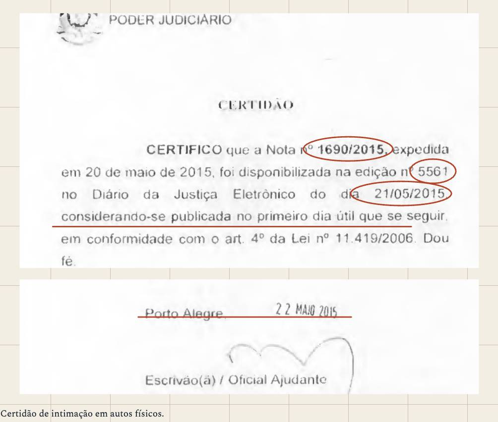
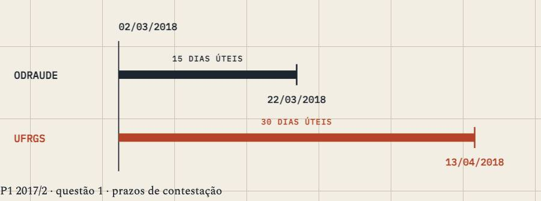
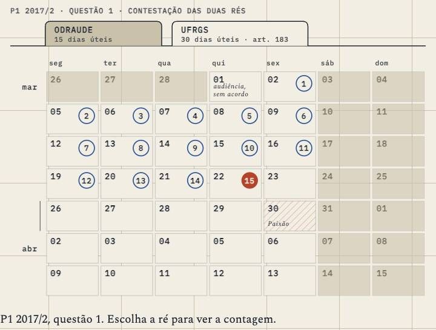

Processo Civil I · aula-07
Contagem dos prazos processuais
3,438 words, one sitting · 6 chapters · 3 figures, 3 saying what they do · 7 quoted sources · no quiz
built on3.1
on09/10
byCodex
generation3 Yosemite
commits26
how it's built
- 1Leia as datas impressas na certidão218 w
- 2O prazo pertence a um ato e a uma regra451 w
- 3Da disponibilização ao primeiro dia contado483 w
- 404. Conte o prazo até o vencimento852 w
- 505. O protocolo tem hora e lugar503 w
- 6O vencimento encerra o poder de praticar o ato790 w
its figures



what it quotes
- 5×Código de Processo Civil
- 2×source
prepared for it · 33 chapters
- primarydidier-curso-vol1-2017 · PDF 471–486
- primarymoodle-model-ar · whole document
- primarymoodle-model-certidao-ne · whole document
- primarymoodle-model-edital · whole document
- primarymoodle-model-mandado-cumprido · whole document
- primarymoodle-model-mandado-nao-cumprido · PDF 1–2
- supportingcpc-lei-13105-capture-2026-09-28 · Art. 218
- supportingcpc-lei-13105-capture-2026-09-28 · Art. 219
the course, as I read it
The house's reference course, now live in its third build and waiting for the chairman's read.
its checks
negated inference 0.0 / 0.5
gap talk 0.0 / 0.1
contrast tail 0.6 / 0.5
staged reveal 5.5 / 8.0
its life
- 18/10Swap follow-up: drop the Art. 229 capture header, the stray 'A' in aula-10, Art. 1.046 § 2º header; backstage-terms catches capture-file headers in vi
- 18/10Apply PROC-R3 swap fixes
- 18/10Add reader actions to Processo lesson figures
- 15/10The turn: a folded corner and ⌘⇧K turn every page to its backstage and back
- 15/10PROC-R3: add release 4.2 structure to Aula 07
- 15/10First screen: one-line titles, marker yellow, Controle card by form, no past dates
- 15/10Clarify the A07 date and worked example
- 14/10Align Processo front register with study order
nextscrolly panels (my note of 19/10: keep · deslop)